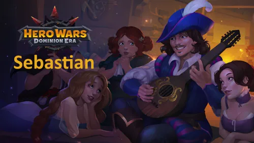
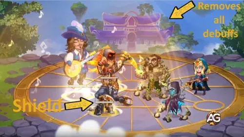
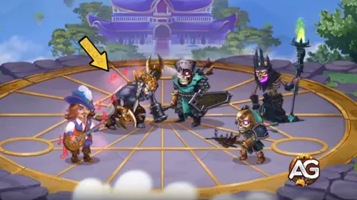
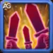
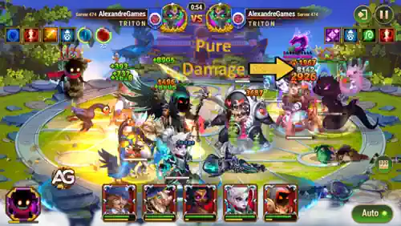
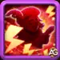
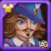

Sebastian não é apenas um bardo, ele é um artista do campo de batalha. Em Hero Wars: Dominion Era, seus acordes protegem os aliados de debuffs debilitantes enquanto potencializam seus acertos críticos. Cada dedilhado de sua guitarra remodela o combate, tornando-o um dos suportes mais confiáveis do jogo.
Neste guia, vamos explorar os atributos, habilidades e sinergias de equipe do Sebastian para que você possa usá-lo ao máximo. Se você busca conter heróis como Lian, Satori ou Jorgen enquanto fortalece seus causadores de dano com críticos devastadores, Sebastian é a escolha perfeita.

Guia do Sebastian - Hero Wars: Dominion Era, um jogo desenvolvido pela Nexters.
Quem é Sebastian?
Sebastian é um herói de suporte que atua com excelência na linha do meio. Sua música se transforma em pura potência de batalha, protegendo aliados de efeitos nocivos e amplificando seu dano. Com Agilidade como atributo principal, Sebastian traz velocidade, precisão e versatilidade para qualquer equipe.
Classe: Suporte
Posição: Linha do meio
Atributo principal: Agilidade
Seu papel é especialmente eficaz contra oponentes que aplicam muitos debuffs, tornando-o uma ótima escolha de contra-ataque no PvP. Além disso, ele tem sinergia incrível com heróis focados em crítico, transformando cada golpe em um potencial divisor de águas.
Se você gosta de montar composições de alto dano e precisa de uma salvaguarda confiável contra heróis de controle, Sebastian é indispensável no seu elenco.
Prós e Contras de Sebastian - Hero Wars: Web e Facebook
✅ Prós
Se destaca contra heróis que dependem fortemente de debuffs, tornando-o um forte counter contra equipes focadas em magia e efeitos negativos.
Aumenta o dano de acertos críticos dos aliados através de suas habilidades de suporte, ampliando o dano geral da equipe.
Sinergiza bem com aliados que também aumentam a chance de acerto crítico, potencializando ainda mais o dano da equipe.
Fornece dano puro extra nos acertos críticos dos aliados, ajudando a atravessar inimigos resistentes (tankies).
❌ Contras
Dependente dos acertos críticos dos aliados para ter máxima eficácia; menos impactante em equipes sem sinergia de crítico.
Vulnerável a heróis que podem contra-atacar ou anular acertos críticos, como Helios e Amira.
Susceptível a atacantes de alto dano ou focados na retaguarda, como Cleaver, Jhu, Kayla, Jorgen e Luther.
Polaris pode reduzir sua eficácia de suporte ao interferir na remoção de debuffs com sua habilidade Cometa Pulsante.
Prioridade de Evolução das Habilidades do Sebastian - Hero Wars: Dominion Era
As habilidades de Sebastian focam em remover debuffs, aumentar críticos e adicionar dano puro. Veja a melhor ordem para evoluí-las.
Ode à Serenidade
Esta é a habilidade suprema do Sebastian. Ela remove instantaneamente todos os debuffs do seu time e cria um escudo que bloqueia 15 novos debuffs de serem aplicados.
Em termos simples, ela “limpa” sua equipe e depois impede que inimigos como Lian, Satori ou Jorgen voltem a incapacitar seus aliados.
Prioridade de Evolução:Muito Alta – É sua habilidade mais forte porque garante que sua equipe permaneça livre de efeitos de controle, tornando-a a primeira a maximizar.

Habilidade - Ode à Serenidade, Hero Wars Dominion Era.
Canção de Batalha
Esta habilidade aumenta a chance de acerto crítico de todos os aliados por 5 segundos.
Fórmula: (0,1% do Ataque Físico + Nível * 0,2 + 15)%.
Isso significa que quanto maior o ataque físico do seu Sebastian, maior a chance crítica adicional que sua equipe recebe.
Prioridade de Evolução:Alta – Chance de crítico é um grande multiplicador de dano para muitos heróis (como
Jhu,
Yasmine ou
Ishmael).
Evolua esta habilidade em segundo, logo após a suprema.

Habilidade - Canção de Batalha, Hero Wars Dominion Era.

Solo Marcante
Enquanto Canção de Batalha estiver ativa, os acertos críticos dos aliados causam dano puro adicional.
Fórmula: (0,12% do Ataque Físico + Nível * 0,2 + 4)% do dano crítico causado.
“Dano puro” ignora armadura e defesa mágica, então isso agrega muito valor em lutas longas.
Prioridade de Evolução:Média Alta – Esta habilidade é poderosa, mas funciona melhor se você já tiver causadores de dano baseados em crítico. Evolua após Ode à Serenidade e Canção de Batalha.

Habilidade - Solo Marcante, Hero Wars Dominion Era.

Ídolo Popular
Sebastian entra na batalha com energia extra, permitindo que lance Ode à Serenidade mais rápido.
Fórmula: (0,0595% do Ataque Físico + Nível * 0,2 + 8)%.
Isso significa que, no início de cada luta, ele já está mais perto de usar sua suprema.
Prioridade de Evolução:Média – Ajuda, mas como Sebastian ganha energia rapidamente nas batalhas, esta habilidade é menos importante do que as demais.
Escolher o melhor mascote para o Sebastian significa focar em sinergia de crítico e utilidade. Fenris é a melhor escolha, seguido por Albus, com Oliver em último lugar.
Fenris concede a Sebastian Ataque Físico e Penetração de Armadura através do patrono, o que fortalece sua sinergia com equipes baseadas em crítico. Sua habilidade bônus permite que Sebastian cegue inimigos por 2 segundos com ataques básicos, reduzindo a precisão dos inimigos. Isso apoia perfeitamente times que dependem de acertos críticos, tornando Fenris a melhor opção.
Albus aumenta tanto o Ataque Mágico quanto o Ataque Físico, e sua habilidade de patrono aumenta o dano puro causado por Sebastian. Embora Sebastian não seja um causador de dano principal, esse mascote ainda melhora seu impacto em equipes focadas em crítico ao adicionar dano extra, tornando-o uma escolha secundária sólida.
Oliver fornece Vida e Armadura como patrono e cura seu mestre quando o HP cai abaixo de 50%. Embora isso ajude na sobrevivência, Sebastian geralmente fica na linha do meio e raramente é o alvo principal. Isso torna Oliver menos valioso em comparação a Fenris ou Albus.
Melhor Skin para Sebastian - Hero Wars: Dominion Era
As melhores skins do Sebastian focam em aumentar seu Ataque Físico e Agilidade, potencializando o poder de suas habilidades. Skins de defesa são situacionais.

Skin Padrão (Agilidade +1.365)
A skin padrão aumenta a Agilidade do Sebastian, seu atributo principal. Cada ponto em Agilidade aumenta Ataque Físico, Armadura e concede bônus de ataque, já que Agilidade é seu atributo primário. Isso melhora sua escala de dano e sobrevivência.
Prioridade de Evolução:Alta – Um investimento sólido que melhora o desempenho geral do Sebastian.
Total de Pedras de Skin de Agilidade para nível máximo: 30.825
Skin Romântica (Ataque Físico +7.095)
A Skin Romântica aumenta bastante o Ataque Físico do Sebastian, o que fortalece diretamente suas habilidades Canção de Batalha e Solo Marcante. Esta é a melhor opção ofensiva para maximizar seu impacto.
Prioridade de Evolução:Muito Alta – Melhor skin no geral para potencializar as fórmulas de habilidades e a sinergia de equipe do Sebastian.
Total de Pedras de Skin de Agilidade para nível máximo: 55.410
Skin Profundezas Sombrias (Armadura +10.650)
Esta skin aumenta a Armadura do Sebastian, tornando-o mais resistente contra atacantes físicos. Útil em batalhas PvP contra oponentes focados em críticos.
Prioridade de Evolução:Média – Um ótimo reforço defensivo, mas situacional em comparação com as skins ofensivas.
Total de Pedras de Skin de Agilidade para nível máximo: 55.410
Skin da Primavera (Defesa Mágica +10.650)
Esta skin aumenta a Defesa Mágica do Sebastian, protegendo-o contra magos como Lars e Orion. Útil se você enfrenta muitos times de dano mágico.
Prioridade de Evolução:Baixa – Situacional, só vale a pena evoluir se você enfrenta muitas equipes com dano mágico.
Total de Pedras de Skin de Agilidade para nível máximo:
55.410
Skin Estelar (Vida +106.645)
A Skin Estelar aumenta a Vida total do Sebastian, tornando-o mais difícil de ser derrotado. Como Vida ajuda contra tanto dano físico quanto mágico, é uma opção defensiva mais equilibrada.
Prioridade de Evolução:Média Alta – Boa para sobrevivência geral, embora ainda não seja tão importante quanto Agilidade ou Ataque Físico.
Total de Pedras de Skin de Agilidade para nível máximo:
55.410
Prioridade de Evolução dos Artefatos do Sebastian - Hero Wars: Dominion Era
Os artefatos do Sebastian aumentam sua utilidade em equipe e potencial de dano. Aqui está a ordem real de prioridade para evoluir seus artefatos em Hero Wars: Dominion Era.
Artefato de Arma: Alaúde Antigo
Este artefato de arma aumenta a Chance de Acerto Crítico para toda a equipe quando Sebastian lança sua ultimate. Como sua habilidade Quebrador de Escudos remove penalidades e fortalece a equipe, aumentar os críticos é extremamente valioso tanto no ataque quanto na defesa.
Chance de Crítico: +13.941
Prioridade de Evolução:Alta – Essencial, pois sinergiza diretamente com suas habilidades e aumenta significativamente o dano da equipe.
Artefato de Livro: Código do Guerreiro
Este livro aumenta os atributos do próprio Sebastian com Chance de Crítico e Ataque Físico. Ele melhora seu dano individual, mas não afeta diretamente a equipe como o artefato de arma.
Chance de Crítico: +4.647
Ataque Físico: +5.577
Prioridade de Evolução:Média – Bom para melhorar o desempenho individual do Sebastian, mas não tão impactante quanto o bônus em área do Alaúde Antigo.
Artefato de Anel: Agilidade
O anel aumenta a Agilidade do Sebastian, melhorando seu Ataque Físico e Armadura. Isso fortalece a eficácia de suas habilidades de suporte, como Canção de Batalha e Solo Marcante, ao aumentar o dano crítico extra causado pelos aliados.
Agilidade: +6.249
- Ataque Físico: +18.747
- Armadura: +6.249
Prioridade de Evolução:Média Alta – Melhora as capacidades de suporte do Sebastian e a escala do dano crítico, tornando-o mais impactante que o Código do Guerreiro em muitas formações de equipe.
Prioridade de Evolução dos Glifos do Sebastian
Os glifos do Sebastian aumentam sua capacidade de suporte e o dano da equipe. Priorize atributos que melhorem diretamente suas habilidades e fortaleçam os aliados de forma eficaz.
1º Glifo - Ataque Físico:
Aumenta o Ataque Físico do Sebastian, o que melhora diretamente o bônus de dano de Canção de Batalha e Solo Marcante. Isso amplia o dano crítico dos aliados e a performance geral da equipe.
Ataque Físico: +4.340
Prioridade de Evolução:Muito Alta – Atributo central para maximizar a efetividade do suporte e potencializar os acertos críticos dos aliados.
2º Glifo - Agilidade:
Cada ponto de Agilidade aumenta o Ataque Físico e a Armadura. Como Agilidade é o atributo principal do Sebastian, ela fortalece ainda mais suas habilidades de suporte, aumentando o dano dos aliados e sua própria durabilidade.
Agilidade: +1.135
Ataque Físico proveniente da Agilidade: +3.405
Armadura proveniente da Agilidade: +1.135
Prioridade de Evolução:Alta – Melhora a efetividade das habilidades e fornece escala defensiva.
3º Glifo - Vida:
Aumenta o total de Vida do Sebastian, permitindo que ele sobreviva mais tempo na linha do meio e mantenha os buffs ativos para os aliados durante a batalha.
Vida: +62.200
Prioridade de Evolução:Média Alta – Importante para durabilidade e manutenção consistente do suporte.
4º Glifo - Defesa Mágica:
Melhora a resistência contra dano mágico. Útil em situações contra equipes focadas em magos, mas não é crítico para seu papel principal de suporte.
Defesa Mágica: +6.500
Prioridade de Evolução:Média – Atributo defensivo situacional.
5º Glifo - Chance Crítica:
Aumenta a chance crítica pessoal do Sebastian, mas ele raramente causa dano direto. Seu efeito é irrelevante para seu papel de suporte na equipe.
Chance Crítica: +1.995
Prioridade de Evolução:Baixa – Impacto mínimo nos aliados ou nas habilidades, deve ser evoluído por último.
Como Counterar Sebastian - Hero Wars: Dominion Era
Aprenda como contra-atacar Sebastian de forma eficaz em Hero Wars: Dominion Era entendendo como seus buffs e habilidades de suporte podem ser neutralizados em batalha.
A Fúria Desesperada da Amira tem como alvo inimigos cujo atributo principal é Agilidade, aumentando temporariamente sua Chance Crítica, mas fazendo com que todos os seus acertos críticos errem. Isso anula diretamente os efeitos de Canção de Batalha e Solo Marcante do Sebastian nos aliados.
Cleaver
Cleaver usa seu gancho para puxar o inimigo mais distante para a linha de frente. Isso atrapalha o posicionamento do Sebastian na linha do meio, impedindo-o de apoiar os aliados com segurança e manter seus buffs.
Helios
A Retribuição Flamejante do Helios causa dano com um feixe de fogo sempre que seus aliados recebem um acerto crítico. Como as habilidades do Sebastian aumentam o dano crítico dos aliados, Helios os pune diretamente, reduzindo sua efetividade.
Jhu
Jhu ataca o inimigo mais distante, frequentemente atingindo Sebastian na linha do meio. Ao eliminá-lo rapidamente ou colocar pressão, Jhu impede que Sebastian lance seus buffs com segurança.
Kayla
Kayla salta para a retaguarda e ataca o inimigo mais distante, frequentemente Sebastian. Isso interrompe sua rotação de suporte e pode reduzir rapidamente seu tempo de atividade na linha do meio.
Jorgen
Jorgen redireciona o dano dos seus aliados para o inimigo mais distante. Isso faz com que Sebastian absorva dano indesejado caso esteja na retaguarda, impedindo-o de dar suporte com segurança e podendo quebrar seus escudos.
Luther
Luther salta para o meio da equipe inimiga e ataca a retaguarda. Ele pode atingir diretamente Sebastian, atrapalhando seu posicionamento e impedindo-o de usar suas habilidades de suporte de forma eficaz.
Polaris
O Cometa Pulsante de Polaris ataca o inimigo mais distante, causando dano em área que atinge múltiplos pontos ao longo do caminho.
Melhores Bandeiras de Guerra para Sebastian - Hero Wars
Escolha Bandeiras de Guerra que maximizem as habilidades de suporte de Sebastian e ampliem o dano dos aliados, aumentando os acertos críticos e a eficácia da equipe nas batalhas.
Bandeira de Guerra do Gelo:
Esta bandeira de guerra reduz os níveis de habilidade dos inimigos em 2 a cada 18 segundos por 8 segundos, enfraquecendo a capacidade dos oponentes de contra-atacar os buffs de Sebastian.
Benefício para Sebastian e Equipe: Diminui a eficácia de inimigos que aplicam debuffs e causam dano, permitindo que Sebastian mantenha buffs e aumente com segurança o dano de acertos críticos dos aliados.
Bandeira de Guerra dos Guerreiros Ágeis:
Acelera o tempo de recarga das habilidades de heróis da classe Guerreiro em 5%, permitindo que ataquem com mais frequência.
Benefício para Sebastian e Equipe: Rotação de habilidades mais rápida aumenta o número de acertos críticos desencadeados pelo Canto de Batalha e Solo Golpe de Sebastian, ampliando o dano de toda a equipe.
Bandeira de Guerra do Declínio:
Reduz a cura da equipe inimiga em 10%, limitando a sustentação de adversários resistentes.
Benefício para Sebastian e Equipe: Facilita que os aliados de Sebastian eliminem rapidamente alvos prioritários, maximizando a eficácia dos buffs de acertos críticos e dos aumentos de dano puro.
Bandeira de Guerra da Recuperação:
Aumenta toda a cura recebida em 10%, melhorando a sustentabilidade da equipe durante lutas prolongadas.
Benefício para Sebastian e Equipe: Apoia a sobrevivência de Sebastian na linha do meio, garantindo que ele continue lançando buffs e melhorando os acertos críticos dos aliados durante as batalhas. Observação: Sebastian não é um curandeiro, então ter um curandeiro dedicado na equipe é essencial para aproveitar totalmente esta bandeira de guerra.
Melhores Equipes para Sebastian - Hero Wars: Dominion Era
Melhores Equipes de Defesa para Sebastian
#
Tabela: Melhores Equipes de Defesa para Sebastian
Dante, Nebula, Sebastian, Aidan, Fafnir, Khorus
Lyria, Ishmael, Nebula, Sebastian, Axel
Galahad, Lyria, Tristan, Sebastian, Lara, Axel
Astaroth, Ishmael, Sebastian, Thea, Fafnir, Axel
Rufus, Dante, Sebastian, Iris, Martha, Axel
Melhores Equipes de Ataque para Sebastian
#
Tabela: Melhores Equipes de Ataque para Sebastian
Khorus, Fafnir, Aidan, Sebastian, Nebula, Dante
Axel, Sebastian, Nebula, Ishmael, Lyria
Axel, Lara, Sebastian, Tristan, Lyria, Galahad
Axel, Fafnir, Thea, Sebastian, Ishmael, Astaroth
Axel, Martha, Iris, Sebastian, Dante, Rufus
Conclusão
Sebastian é um herói de suporte versátil em Hero Wars: Dominion Era, destacando-se em aumentar os acertos críticos dos aliados e adicionar dano puro. Suas habilidades o tornam particularmente eficaz contra inimigos que dependem de debuffs, ao mesmo tempo que cria sinergia com heróis que também aumentam o dano crítico.
Embora ele não cause danos massivos sozinho, a presença de Sebastian pode mudar o rumo da batalha ao amplificar o desempenho da equipe e manter os buffs ativos. Combiná-lo com os aliados certos, Bandeiras de Guerra e artefatos maximiza sua utilidade e garante que sua equipe se mantenha forte tanto no ataque quanto na defesa.
No geral, dominar o posicionamento de Sebastian, o aprimoramento de suas habilidades e a composição da equipe permite aproveitar totalmente seu potencial de suporte. Com planejamento cuidadoso, ele pode se tornar um pilar-chave da sua estratégia, melhorando cada batalha que sua equipe enfrenta em Hero Wars: Dominion Era.
Sobre o autor
Alexandre Domingos é pós-graduado em Engenharia e Supervisor de Produção. Nas horas vagas, se aventura como youtuber e blogueiro no Alexandre Games, unindo sua paixão por tecnologia e estratégia com o mundo dos games. Desde os 5 anos mergulha nesse universo, jogando em plataformas clássicas como MSX, Master System, Nintendo e até em um velho PC 286.
Você gostou do nosso Guia do Sebastian para Hero Wars PC? Há algo que não entendeu ou gostaria de sugerir mudanças? Convidamos você a se juntar à nossa sessão de comentários na página do Alexandre Games Blog. Não hesite em expressar sua opinião, clarificar suas dúvidas e compartilhar sua sugestões. Clique no botão abaixo para começar: